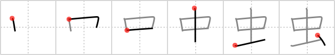

虫
← →
insect

Reading:
On-Yomi: チュウ、キ — Kun-Yomi: むし
Heisig story:
Work with the pictograph as you wish.
Heisig comment:
* As a primitive, this insect will refer to the whole insect kingdom; it can be further specified for each kanji that contains it.
Koohii stories:
1) [Shibo] 19-3-2008(164): I see the bottom of this kanji as an arm, and the top is an insect biting into the arm, sucking some blood.
2) [alexmat] 6-7-2008(60): Insect in one drop of amber. Think Jurassic Park.
3) [Zarxrax] 17-4-2008(34): An insect stuck its sharp, needle-like mouth in my arm and sucked out one drop of blood.
4) [lee101] 9-8-2010(30): Just Remember it.
5) [alpuri] 14-3-2010(14): The top part is IN as for INSECT. the bottom part is the arm in which the insect stings. (thanks Shibo).